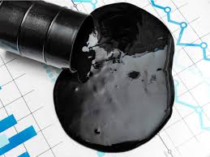

CRUDE OIL
Meaning of of Crude Oil
Crude oil is a thick, black, naturally occurring liquid found deep under the Earth's surface. It is also called petroleum. Crude oil is made from the remains of tiny plants and animals that lived millions of years ago. Over time, heat and pressure turned these remains into oil. Crude oil is very important because it can be refined to produce many useful products like fuels, plastics, and chemicals.

Composition of Crude Oil
Crude oil is a mixture of many different substances. It contains mainly hydrocarbons, which are compounds made of hydrogen and carbon atoms. It also contains small amounts of sulfur, nitrogen, oxygen, and metals.
Petroleum Products and Their Uses
- Petrol: Fuel for cars and motorcycles.
- Diesel: Fuel for trucks, buses, and generators.
- Kerosene: Used for cooking, heating, and lighting.
- Lubricating oil: Reduces friction in machines.
- Bitumen (Asphalt): Used for roads and roofing.
- LPG: Gas for cooking and heating.
- Jet fuel: Used for airplanes.
- Petrochemicals: Used to make plastics, detergents, clothes, fertilizers, and medicines.
Refining of Crude Oil
Crude oil cannot be used directly. It must first be refined. Refining is the process of separating crude oil into its different components or fractions based on their boiling points. This is done in a factory called a refinery.
Steps in refining crude oil:
- Distillation: Crude oil is heated in a furnace, and the vapours rise through a distillation column. Different fractions are collected at different levels.
- Conversion: Some fractions are chemically changed into more useful products, such as turning heavy fuel oil into petrol. This process can involve cracking, reforming, and polymerisation.
- Treatment: Unwanted impurities such as sulfur, nitrogen compounds, and water are removed to make the products cleaner and safe for use.
Main fractions obtained from crude oil
- Refinery gas: It is used as fuel for heating and cooking.
- Petrol (gasoline): It is used as fuel for cars.
- Naphtha: It is used in the production of chemicals and plastics.
- Kerosene: It is used as jet fuel and for cooking and lighting.
- Diesel: It is used as fuel for buses, trucks, and some cars.
- Fuel oil: It is used for ships, factories, and power stations.
- Bitumen: It is used for road construction and roofing.
Importance of refining crude oil
- It helps to produce useful products from crude oil.
- It helps to ensure that fuels burn efficiently and cleanly.
- It helps to remove harmful impurities that can damage engines or cause pollution.
Petrochemicals
Petrochemicals are chemicals made from crude oil or natural gas. They are used to make many everyday products. Petrochemicals are obtained by further processing the fractions of crude oil, especially naphtha and gas fractions.
Examples of products made from petrochemicals:
- Plastics like polyethylene, PVC, and polystyrene.
- Synthetic fibers like nylon and polyester used in clothes.
- Fertilizers like urea and ammonium nitrate.
- Detergents and soaps.
- Medicines and paints.
Importance of Crude Oil to National Development
- Fuel for transportation and industries: Crude oil gives fuel for cars, buses, and generators, helping people and industries work.
- Revenue for the country: Selling oil to other countries earns money for the country.
- Job creation: The oil industry provides jobs for many people.
- Raw materials for products: It is used to make products like plastics, clothes, and chemicals.
- Infrastructure development: Money from oil helps build roads, schools, hospitals, and electricity plants.
- Energy supply: It gives energy for cooking, heating, and running machines.
- Technology and skills: Working in oil helps people learn new technology and skills.
Effects of Crude Oil on Other Natural Resources
- Water pollution: Oil spills can pollute rivers and lakes, harming fish and water.
- Soil degradation: Leaks can make soil bad for farming.
- Air pollution: Burning oil pollutes the air with smoke and gases.
- Deforestation: Forests are cut for oil exploration.
- Loss of wildlife habitat: Animals lose their homes when oil is extracted.
- Land use: Land is used for pipelines and refineries instead of farms or houses.
- Climate change: Using too much oil causes climate change.
Safety Precautions
- Avoid handling crude oil and chemicals without protective equipment.
- Do not burn crude oil or its products carelessly.
- Report oil spills or leaks immediately to prevent accidents.
Conclusion
Crude oil is a natural resource that provides many useful fuels and materials, but it must be refined before it can be used. Petrochemicals made from crude oil help us to produce everyday products such as plastics, detergents, and medicines. Understanding crude oil and petrochemicals helps us to improve how we use resources responsibly.